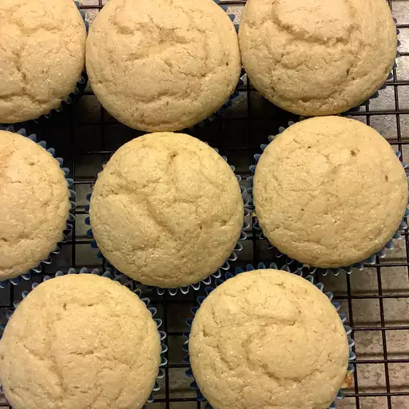

Corn Bread

The yummiest sweet corn bread ever! I make it into muffins and they never last long!
Ingredients
- 1/2 cup butter
- 1/2 cup white sugar
- 2 eggs
- 1 cup yellow cornmeal
- 1 1/2 cup all-purpose flour
- 2 teaspoons baking powder
- 1/2 teaspoon salt
- 1 1/2 cups milk
Steps
- Preheat oven to 375 degrees F (190 degrees C). Grease an 8-inch square pan.
-
Beat butter and sugar together in a bowl until creamy. Add eggs; beat until combined. Stir in cornmeal.
-
Sift flour, baking powder, and salt together in a separate bowl. Stir flour mixture, alternating with milk, into butter mixture until well combined. Pour batter into prepared pan.
-
Bake in the preheated oven until a toothpick inserted in the center of the bread comes out clean, 30 to 35 minutes.
Cooks Note:
You can also pour the batter into a greased muffin tin. Bake 15 to 20 minutes.